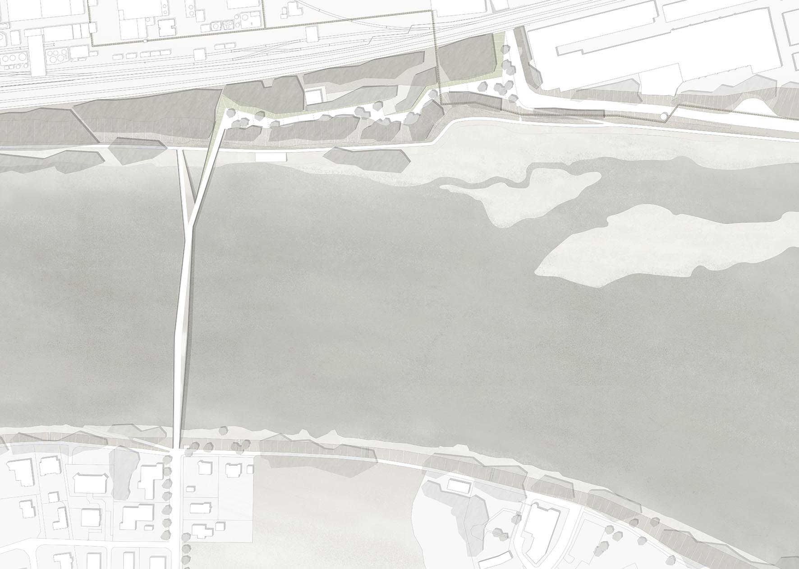
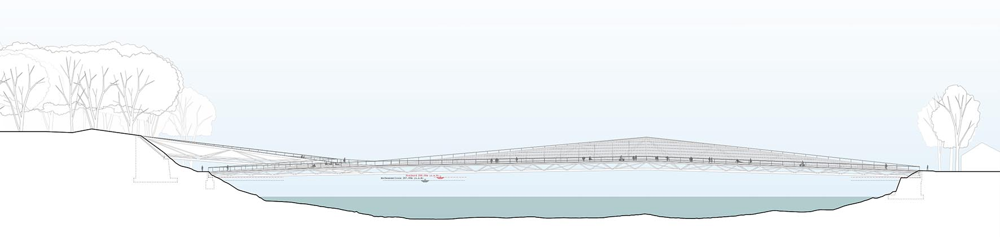
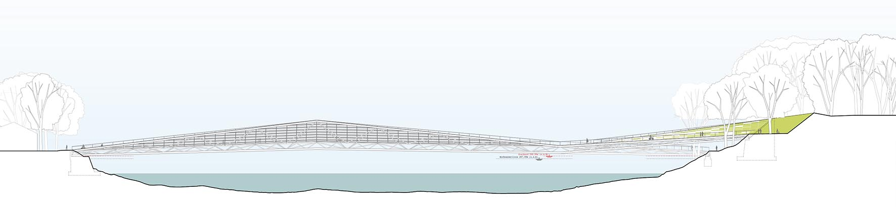
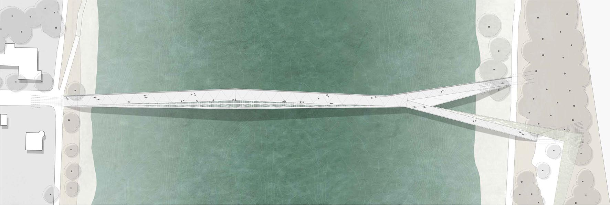
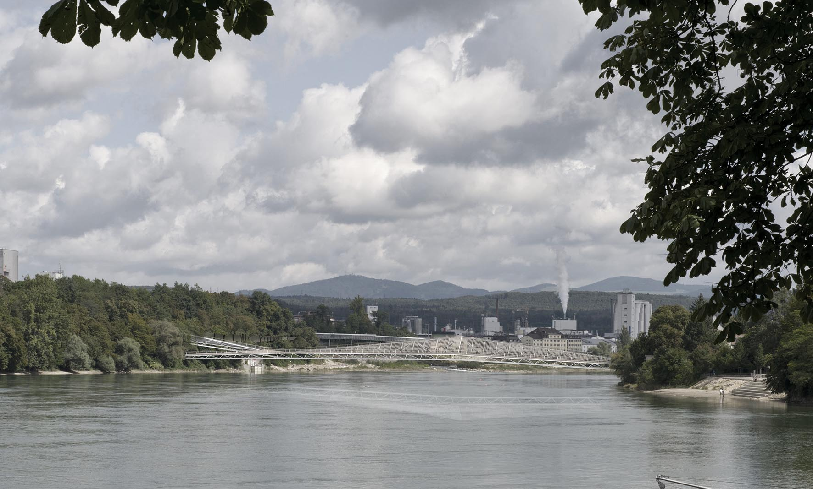
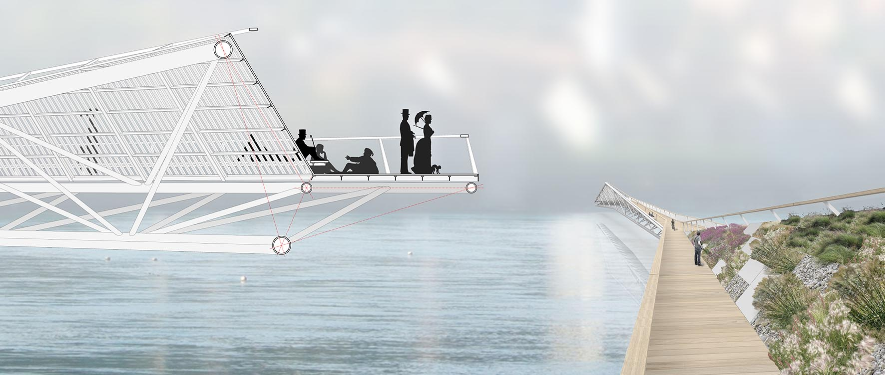
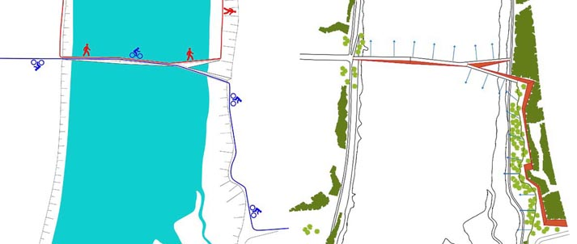
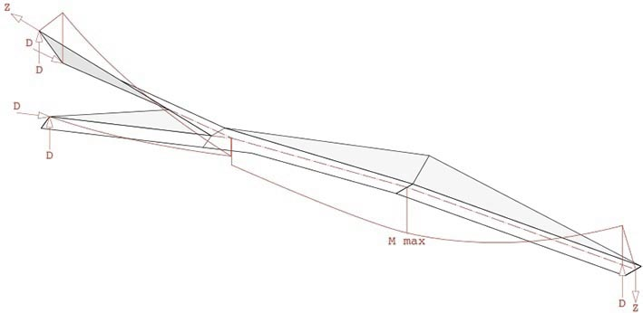

-

Lageplan


Ansicht Süd

Ansicht Nord

Längsschnitt

Grundriss

Aussenperspektive

Konstruktive Axonometrie
WEGFÜHRUNG - GESTALTUNG
Der neue Rheinsteg verbindet beide Nutzungsziele der Brücke – Uferweg und Radweg zu einer Brückenskulptur und integriert
beide Weganknüpfungen in das Tragkonzept.
Vom Floßweg kommend führt die Brücke in direkter Fortsetzung des Floßwegs über den Rhein, knickt im ersten Drittelspunkt
leicht nach Norden ab und gabelt sich dann im 2. Drittelspunkt, sowohl horizontal als auch vertikal auf. Der südliche
Arm führt zum Uferweg und schließt den „Kurzen Uferrundweg“. Der nördliche Arm führt zur ca.6 m höher gelegenen neuen
Hochpromenade, und stellt damit die direkte und höhengleiche Anbindung an den überregionalen Radweg her.
Diese sich aufspreizende Wegegeometrie wird vom Tragwerk genutzt, so daß, trotz flacher Kontur, die gesamte Wegstrecke
pfeilerlos überspannt wird.
An den einseitig aufsteigenden Fachwerkträger werden die hölzernen Wegflächen durch geneigte Brüstungsflächen flankiert.
Beim Seitenarm zum Uferweg wird der Brückenweg um ein Liegedeck erweitert. Am Hauptfeld faltet sich der Holzbelag nach
oben und bildet als Spalierwand einen nach Süden und Altstadt ausgerichteten Wegeraum. Entlang dieses hölzernen Spaliers
und diese als Lehne nutzend verläuft eine Sitzbank, von der man Sonne und Aussicht genießen kann. Auf der Brüstungsfläche
des nördlichen Seitenarms wird der Magerrasenbewuchs der Böschungsflächen der Hochpromenade als extensive Begrünung
weitergeführt.

LANDSCHAFT
Die neue Brücke entwickelt sich aus den Besonderheiten des vorgefundenen Terrains und bindet wie nahtlos an das vorgefundene Wegenetz an. Die Maßnahmen der landschaftlichen Einbindung konzentrieren sich auf das deutsche Hochufer. Dort entwickelt sich von der Bahnunterführung aus kommend nach Westen hin entlang der Hangkante eine einladende Hochpromenade mit einem reizvollen Blick über den Rhein. Unter Berücksichtigung der vorhandenen Hauptpumpleitung entwickelt sich eine Abfolge von flachen Rampen. Präzise Böschungen fangen den Höhenunterschied nach Norden hin ab. Auf den angeschnittenen besonnten Lagen entwickeln sich attraktive und vielfältige Magerrasenstandorte. Zur Rheinseite hin spiegelt sich der lebendige Verlauf der vorhandenen Böschung mit seinen Vor- und Rücksprüngen wieder. Aufgeastete Bäume bilden mit ihrem semitransparenten Schleier eine subtil lesbare Trennung in rückwärtige Bewegungsfläche und den von dem Alignement der Baumstämme geschützten hangseitigen Aufenthaltsbereiche.
TRAGWERK - STATISCHE ERLÄUTERUNG
Das Tragwerk der Brücke entwickelt sich aus den funktionalen Anforderungen Überquerung des Rheins mit Anbindung an den Uferrundweg und an die untere Kanalstraße am Rheinhochufer auf deutscher Seite. Der vorgeschlagene Überbau überspannt den Flussquerschnitt mit ca. 220 m Länge stützenfrei. Als statisches System wird in der sehr technisch geprägten Umgebung in unmittelbarer Nähe zum Kraftwerk eine Fachwerkkonstruktion vorgeschlagen, welche sich entsprechend der Wegeführung am deutschen Ufer nach oben und unten aufgabelt. Somit entsteht aus statischer Sicht ein dreiecksförmiger Hauptträger mit 167 m Länge und 9,70 m Höhe, der sich auf einem räumlichen Strebenbock über Zug- und Druckkräfte ablastet und im Rheinufer einspannt. Durch die Faltung der einzelnen Querschnittsteile des Überbaus entsteht ein räumliches Tragverhalten, das sich versteifend auf den Gesamtquerschnitt auswirkt. Zugleich ergeben sich daraus je nach Standort wechselnde Blickfelder, welche das Bauwerk für den Nutzer sowohl von der Brücke aus als auch vom Ufer erlebbar und abwechslungsreich gestalten. Zur Steifigkeitserhöhung wird der Überbau auf der Westseite am Hochufer sowie auf der Ostseite in das Widerlager eingespannt